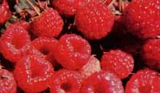

Autumn arrives in a golden haze. After still-hot September days, feel the cool of fall nights, hinting of the approaching cold. Heft the weight of a pear in your palm, bite a crisp apple and taste the tart juice, and -as tendrils of wood smoke embroider the dusk-gather in the garden's bounty . . . your well-earned reward for the toil of the summer past, your protective talisman against the coming winter's dark chill.
News for the Tropics
All too often, the needs and interests of folks who live in zones of unusual temperature and weather-such as the tropics-are neglected. Well, here's a treat for all of our friends in semitropical climates: There are several organizations-and one publication-that cater to your special interests! One of the best sources of "down south" information is Marian Van Atta's newsletter Living Off the Land ($6.00 a year from Marian at Dept. TMEN, Box 2131, Melbourne, Florida 32901).
Each issue features an article on the culture of a particular warm-climate fruit or vegetablecomplete with recipes -as well as shorter pieces, letters to the editor, a seed exchange, and much more. Growers of tropical fruits and vegetables (and that can include northerners who are fortunate enough to have greenhouses like the build-it-yourself sun-catcher detailed on page 80) may also wish to associate with one of the clubs devoted to the exchange of information about these delicacies. Contact the California Rare Fruit Growers, c/o Paul Thomson, Star Route, Bonsall, California 92003 . .. the Rare Fruit Council International, 3280 South Miami Avenue, Miami, Florida 33129 . . . or the Southern Fruit Council, RR 3, Box 40, Summit, Missis sippi 39666.
It's The Berries
Autumn is, among other things, raspberry pruning time. Cut back the bearing canes of both the black- and red-fruited plants as soon as all the berries have been picked . . . to eliminate vegetable matter on which diseases can overwinter.
Regular dormant pruning-for the purpose of thinning your patch-can also be done after leaf fall . . . although some supplementary cutting (of winter-killed canes) may still be needed come early spring. Simply trim the laterals back to 6-12 inches . . . and cut any canes that have not been pinched back to a 30-inch length. Remember that sanitation in the berry patch is the best defense against disease . . . and the best guarantee of loads of succulent fruit next year!
The Gardener's Bookshelf
We've just had a chance to inspect one of those "can't do without" gardening books. The volume was Park's Success With Seeds by Ann Reilly, and we found it very impressive! Within its 368 pages are descriptions of over 500 varieties of flowers and vegetables-from the familiar to the exotic-with detailed instructions for growing the plants from seed and cultural directions for keeping them healthy. You'll find both Latin and common names, hardiness zones, suggestions for the use of various plants in landscaping, and-especially useful-pictures of the mature flora and of their seedlings . . . a feature which should help you avoid weeding mistakes! A sound introductory text covers the intricacies of raising plants from seed. The book is a whale of a buy at $10.95, postpaid, from the George W. Park Seed Company, Dept. TMEN, Box 31, Greenwood, South Carolina 29647.
Give Me Land, Lots of Land...
Most of us are fortunate . . . we have room to expand our gardens a bit if we want to. But America's farmers may not be so lucky, because every day four square miles of our prime farmland is shifted to uses other than agriculture. That's the alarming conclusion of the National Agricultural Lands Study, an organization composed of 12 federal agencies, representatives of state and local governments, individual landholders and public interest groups. Under the leadership of the Secretary of Agriculture and the Chairman of the Council on Environmental Quality, the Study has scrutinized all of this nation's agricultural land . . . croplands, rangeland, and forest.
The major focus has been on what Secretary Bergland calls "the world's best and flattest agricultural land", and the conclusion that the Study has reached is ominous: In the last 50 years or so, we have paved over the equivalent of all the cropland in Ohio . . . and by the end of the century-if we continue in our folly-we'll pave over an area the size of Indiana!
The first step in dealing with such a threat is recognizing that it exists. You can find out more from: National Agricultural Lands Study, New Executive Office Building, 722 Jackson Place N. W., Washington, D.C. 20006. (Ask for the pamphlet "Where Have the Farm Lands Gone?")
Apprentice Update
Regular readers of MOTHER may remember that we announced (back in No. 62) that this magazine would sponsor a series of gardening workshops on our 622.4 beautiful mountain acres. Well, 25 students took the opportunity to learn biodynamic/French intensive horticultural techniques this summer, under the leadership of our master gardeners, Barbara Turcotte and Kerry Sullivan. MOM's two-week-long workshops will resume in the spring, so-if you'd like to study double-digging, tilthing, greenhouse procedures, watering techniques, transplanting, and weed control-drop a note to Barbara and Kerry at THE Mother Earth News(restricted), P.O. Box 70, Hendersonville, North Carolina 28791.
|
 |
|
|